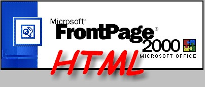

El lenguaje HyperText Markup Language, o HTML, es el subconjunto de un lenguaje de publicación electrónica a gran
escala llamado Standard Generalized Markup Language (SGML). HTML es el lenguaje de códigos que hay detrás de los
documentos que aparecen en el World Wide Web. Es un lenguaje simple, sencillo, que no requiere de ningún software
especial para editarlo. Varios programas disponibles en el mercado le permiten manejar los códigos HTML de distintas
maneras, desde Microsoft FrontPage, que introduce la codificación HTML mediante una interfaz gráfica de usuario (GUI),
hasta Editores HTML que codifican por colores sus etiquetas y señalan los errores. Muchos procesadores de texto,
como WordPerfect y Microsoft Word, son también capaces de formatear el lenguaje HTML. Esto resulta muy conveniente,
ya que HTML utiliza gran parte de los principios subyacentes en los principales procesadores de texto. Si está
acostumbrado a los estilos de Word o WordPerfect, la codificación HTML le resultará muy